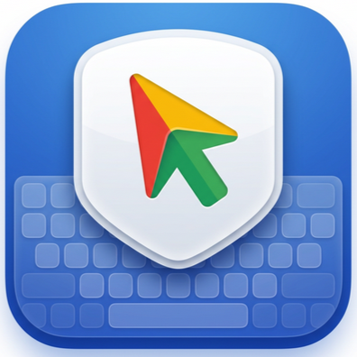
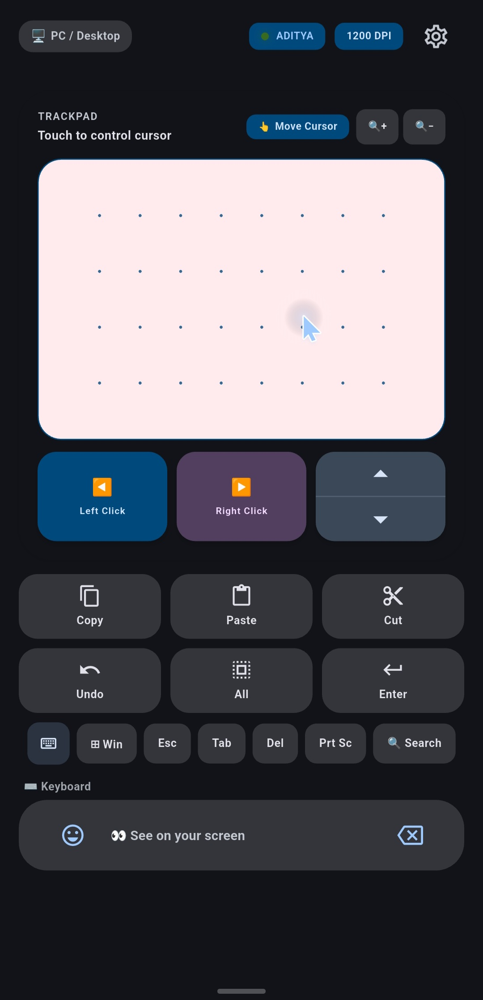
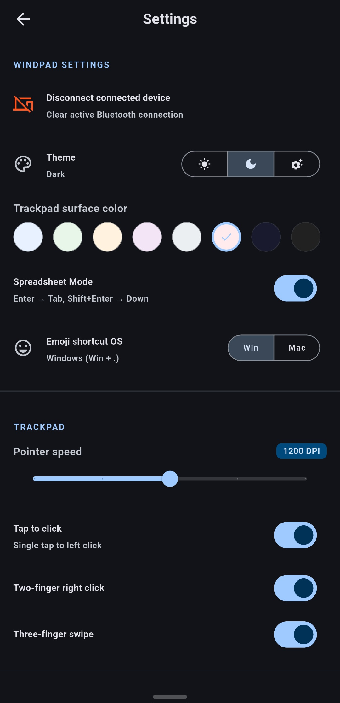
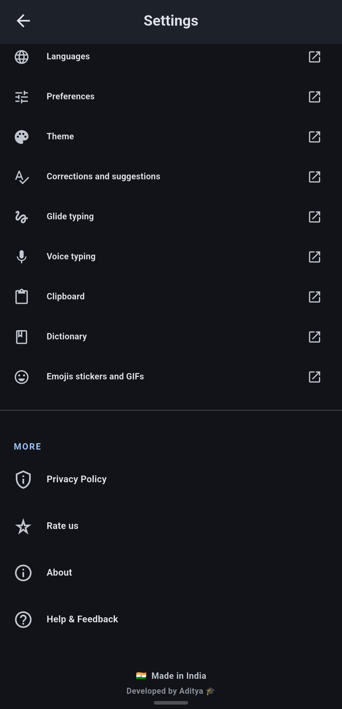
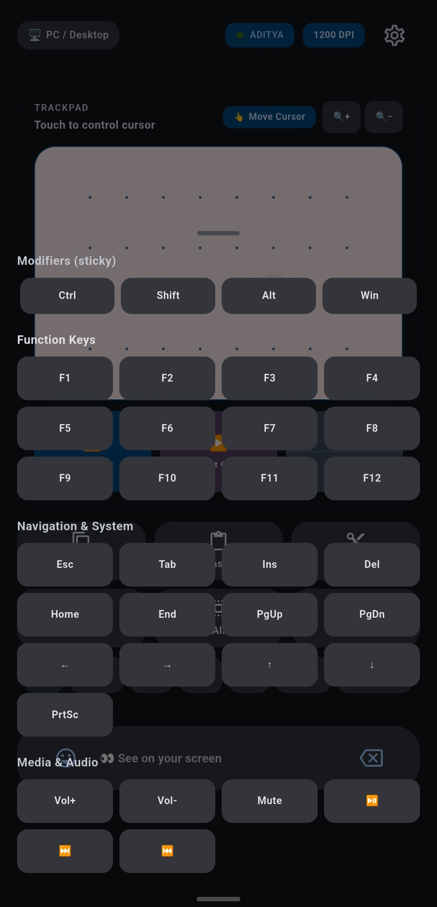
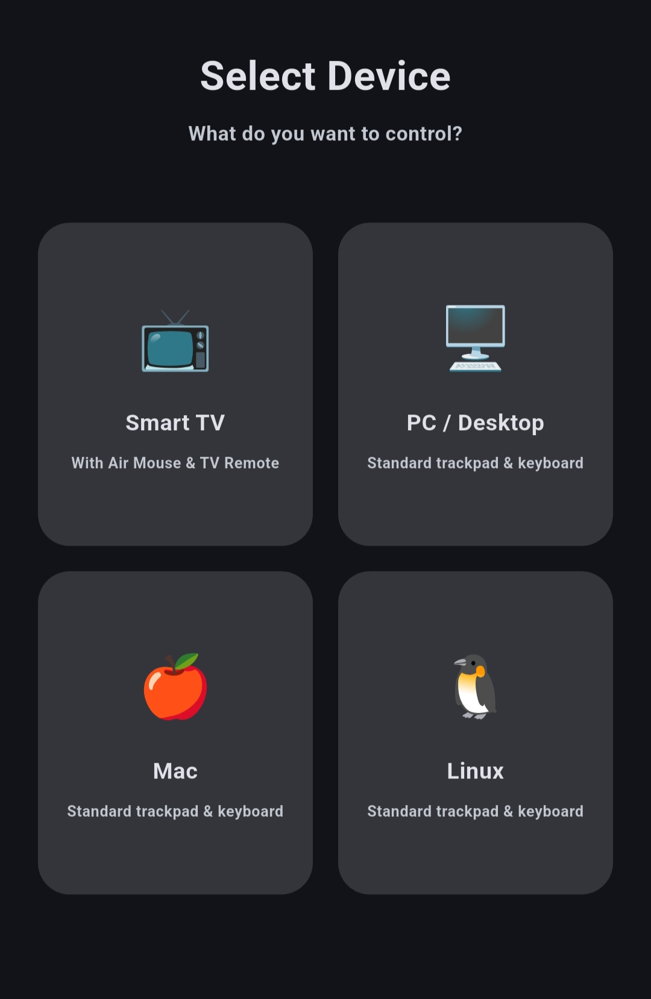

WindPadLow-latency Bluetooth HID. Works seamlessly with Windows, macOS, Linux, and compatible Smart TVs.
No PC receiver app required.

Built differently from typical remote apps.
Smooth cursor movement tailored for speed and accuracy.
1-finger move, 2-finger scroll, pinch-to-zoom, and 3-finger swipe.
Dedicated buttons for Copy, Paste, Cut, Undo, Select All, and Emoji.
Uses standard Bluetooth HID. Connects to devices just like a real mouse.
Send text directly from your phone's clipboard to your PC effortlessly.
Beautiful dark, light, and system themes with customizable colors.
If your device supports a Bluetooth mouse, it supports WindPad.
| Platform | Support Status |
|---|---|
| Windows | ✅ Supported |
| macOS | ✅ Supported |
| Linux | ✅ Supported |
| Compatible Smart TVs | ✅ Supported |
| Android | 📱 Controller Device |
Control your laptop or Smart TV from your bed. No need to get up to pause or change volume.
Walk around the stage freely while controlling your slides right from your phone.
Hardware failed? WindPad is the perfect, instant, zero-cost replacement.
Navigate clunky Smart TV interfaces easily using your phone's keyboard and trackpad.
Manage your media center PC or headless setup effortlessly over Bluetooth.




No messy cables, no receiver apps needed on your target device.
Download and install the WindPad APK on your Android device.
Enable Bluetooth on your computer/TV and pair it with your Android phone.
Open WindPad. Your phone is instantly recognized as a physical mouse and keyboard.
🛠️ Troubleshooting Bluetooth: If pairing fails, unpair the device from both your phone and PC, restart Bluetooth on both, and try pairing again from your PC's Bluetooth menu.
Your data belongs to you.
No! WindPad uses standard Bluetooth HID profiles. Your PC thinks it's a real, physical bluetooth mouse.
No. WindPad operates entirely over Bluetooth. No Wi-Fi or internet connection is required.
It works natively with Windows, macOS, Linux, and compatible Smart TVs.
Yes, 100% free, open-source, with no ads or tracking.
HID stands for Human Interface Device. Android's Bluetooth stack allows the phone to broadcast itself exactly like a standard hardware keyboard or mouse.
The Helper is completely optional and Windows-only. It provides advanced pointer smoothing. You do not need it to use WindPad's core features.
The main application for your phone. Turns your device into a trackpad and keyboard.
Download APK
Prefer verified releases?
Download from GitHub Releases
(Optional) A companion app for Windows providing advanced cursor smoothing and filtering.
Get Windows HelperWe are always open to feedback and questions.